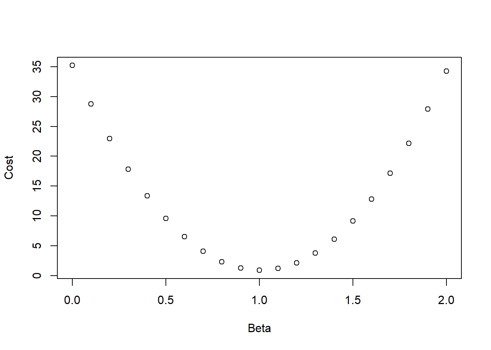
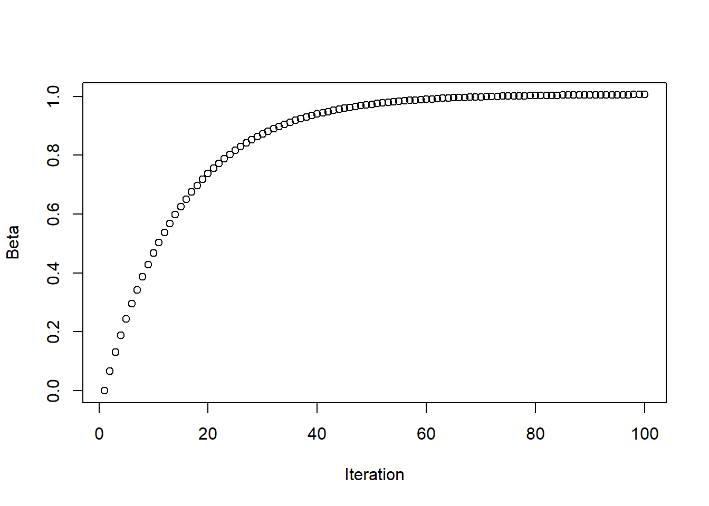
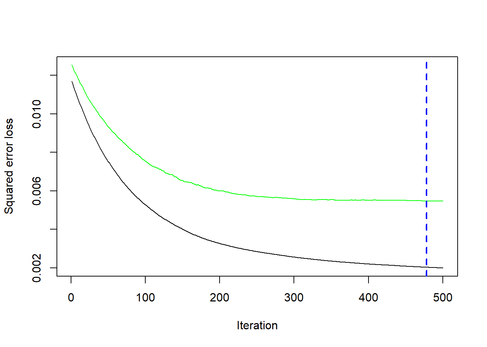

Random Forests are a powerful technique for reducing variance in tree models, but they are kind of dense (pun totally intended) because they don’t learn from their own mistakes. Every tree in the forest provides its own predictions and these predictions are averaged at the end. In this module, we will cover some methods that are a little bit smarter about turning previous failures into future successes.
Boosting is one such technique and the one most closely connected to our work in the previous module. It works by building a forest of trees on top of one another. On their own, these trees are little more than stumps, but together, they are strong. In these notes, we will focus on a specific type of boosting called gradient boosting methods (gbm for short). They are implemented using an R package of the same name so make sure you install it before knitting these notes.
Fun Analogies
I asked chatGPT to come up with an analogy for the difference between random forests and gradient boosting trees based on growing a forest vs refining a tree. This is what it came up with:
Imagine you’re planting a whole forest. You toss a bunch of seeds across a wide area, and let hundreds of trees grow independently, each in slightly different soil, sunlight, and conditions (random subsets of data and features). Once they’re grown, you walk through and take the average height of all the trees to estimate the average height of trees in general. No one tree controls the outcome—it’s the wisdom of the crowd.
Now imagine you’re a bonsai gardener. You start with one small tree. It’s not perfect, but you carefully observe its flaws. Then you add another bonsai, trained to correct just those flaws. And another. Each new tree is grown with careful pruning and wiring to fix what the previous ones missed. Over time, this deliberate sequence of trees shapes an elegant, intricate garden—a masterpiece of iteration and refinement.
Nobody knows what that means, but its provocative1. It also volunteered this one:
Random Forests are like a group of independent decision-makers (trees), each giving their own opinion (prediction) based on different random subsets of the data. They all work in parallel, and the final decision is an average (or majority vote) of their outputs. The strength comes from diversity and aggregation.
That makes a little more sense. Gradient Boosting is kind of like a sequential team of experts, where the first expert gives an initial guess, and each subsequent expert focuses specifically on fixing the errors made by the prior ones. But enough of this bull…oney. Let’s get down to business.
Warning: There is an unavoidable use of calculus in the explanation for how gbm works so here’s a quick recap of the things you need to know:
Given a function of one variable \(y=f(x)\), its derivative \(f'(x)\) tells you the rate of change of \(y\) with respect to \(x\). If \(f\) is linear, that the derivative is just the slope.
The derivative is positive if the function is increasing and negative if the function is decreasing.
If you want to find the value of \(x\) at which \(f\) achieves a local max or min, we look for places where the derivative is 0, i.e. we solve the equation \(f'(x) = 0\) for \(x\).
Given a function of more than one variable, the derivative is replaced by the gradient.
The gradient points in the direction of “steepest ascent”.
And if you don’t like any of this, then you can always skip ahead to the implementation.
Gradient Descent
Before diving into the details of gradient boosting, let’s briefly introduce/revisit a concept from the Module 1 supplement: gradient descent. To keep things simple, imagine we have data generated by a simple linear model (SLM) with no intercept: \[Y = \beta X + \varepsilon \]
This setup will help us explain how gradient descent works before connecting it to how boosting algorithms learn.
In this model, the least squares estimate of \(\beta\) will be the minimum of the quadratic cost function
\[L(\beta) = \sum_{i=1}^n (y_i - \beta x_i)^2 \]
Here is a plot of this function for \(0 \leq \beta \leq 2\) for some fake data generating using \(\beta = 1\):
set.seed(410)x=seq(0,1,by=0.01)n=length(x)y=x+rnorm(n,0,0.1)cost=function(b,x,y){ N=length(b) out=numeric(N)for (i in1:N){ out[i]=sum((y-b[i]*x)^2) }return(out)}b=seq(0,2,by=0.1)plot(b,cost(b,x,y),xlab="Beta",ylab="Cost")

The minimum here looks to be around \(\beta=1\) as it should be.
In this case, its possible to find an exact formula for the minimum of \(L\) by solving \(L'(\beta) = 0\), but imagine we have a cost function \(L\) that is more complicated and, although we can calculate its derivative \(L'\), we cannot solve the equation \(L'(\beta) = 0\) analytically. Then what we could do is try to build a sequence of points \(b_0, b_1, ...\) that converge to the minimum. To do so, we start by calculating \(L(b_0), L'(b_0)\) for some random starting point \(b_0\). Since the derivative tells us the rate of change of \(L\) at \(b_0\), we could use the following rule to choose a next guess \(b_1\) for the minimum
If \(L'(b_0)\) is positive, move to the left.
If \(L'(b_0)\) is negative, move to the right.
In other words, we want to move opposite the direction in which \(L'\) is pointing. Also, we probably want to move proportional to \(|L'(b_0)|\) since we want to move further for a rapidly changing function than a slowly changing one. We can control how far we move by introducing a parameter \(\gamma>0\) (called the learning rate or shrinkage). Then our next choice will be \[b_1 = b_0 - \gamma L'(b_0)\] or in general, \[b_t = b_{t-1} - \gamma L'(b_{t-1})\] This formula is the foundation for gradient descent in one-dimension. If the cost function is multidimensional, then the analog is \(b_t = b_{t-1} - \gamma \nabla L(b_{t-1})\) where \(\nabla L\) is the gradient of \(L\). Hence the name “gradient descent”.
The figure below shows how this plays out with the above example using a learning rate of \(0.1\).
gradient_descent =function(x, y, beta0=0, gamma=0.01, n_iter=1000) {# x, y = data# beta0 = initial guess of slope# gamma = learning_rate# n_iter = number of iterations beta=numeric(n_iter) # List to store betas beta[1] = beta0 # Initial slope n =length(y) # Number of data pointsfor (i in2:n_iter) {# Calculate derivative of cost function grad = (-2/ n) *sum(x * (y - beta[i-1] * x ))# Update parameter beta[i] = beta[i-1] - gamma * grad }return(beta)}gd_result =gradient_descent(x, y,0,0.1,100)plot(gd_result,xlab="Iteration",ylab="Beta")

Notice the b’s converge to 1 relatively quickly. However, if the learning rate is too high, we fail to converge because we “jump over” the minimum:
In this example, it works well to choose the learning rate \(\gamma\) on the order of \(|L'(b_0)|^{-1}\), since that gives updates that are roughly on the scale of integers. But this rule of thumb depends somewhat on how close your initial guess is to the minimum. If you’re starting far from the optimal value, a step size that’s too large might cause overshooting or oscillation, while one that’s too small could slow convergence to a crawl.
In practice, there’s no one-size-fits-all choice for \(\gamma\). You usually have to experiment with several values to find one that balances speed and stability. Many modern algorithms use strategies like learning rate schedules or adaptive methods (e.g., shrinking the learning rate over time) to fine-tune this process automatically2.
Gradient Boosting.
Now suppose that instead of an SLM, we are trying to fit a more general model \[Y = f(X) + \varepsilon\] Then the least squares approach tries to minimize the cost function \[L(f)= \sum_{i=1}^n (y_i - f(x_i))^2\]
where \(r_i\) is the ith residual. Therefore, one way of thinking about gradient descent in the context of statistical modeling is that we are building a sequence of models \(f^0, f^1,..\) by the recursive rule3\[f^t = f^{t-1} + \gamma \sum r_i^{t-1}\] where the \(r_i^{t-1}\) are the residuals from model \(t-1\) and \(\gamma > 0\) is a constant4 representing the learning rate (also called the shrinkage). This recursion is the basis of gradient boosting methods (gbm).
When applied to trees, gbm work as follows:
First, we fit a relatively simple tree to the data in which only a small number of splits are allowed. The allowed number of splits is a parameter called the interaction depth. Often, we set interaction depth = 1 and allow only one split. This type of tree is called a stump.
Second, we calculate the residuals5 from our first model and then fit a tree to the residuals, updating our prediction of \(y\) by the gradient descent formula after we are done.
Third, we repeat the second step over and over until we reach some specified number of trees^[Or the decrease in cost function for an additional tree is smaller than specified tolerance or we have some minimum number of observations per leaf; different implementations allow for different specifications of stopping criteria.).
GBM in R
In R, this can be done using the gbm package which we apply below to the Election Data using a 60-40 split as in the bag forest notes.
var rel.inf
median.income median.income 51.0890236
metro metro 34.0996391
non.citizen non.citizen 7.7473098
income.ineq income.ineq 2.7283589
high.school high.school 1.7318827
non.white non.white 1.4691487
white.pov white.pov 0.6533253
unemployed unemployed 0.4813118
First, let’s talk about the output. The summary describes the relative influence of each variable in the boosted model. This is the same thing as variable importance in random forests and we can see that the top five here are similar.
Second, let’s talk about the inputs.
distribution = “gaussian” specifies regression; use “binomial” for classification
interaction.depth = 1 says all the trees can have a max of one split (stumps)
shrinkage = 0.01 specifies the learning rate
n.trees = 500 specifies the total number of trees to fit
cv.folds = 5 gives the number of cross-validation folds to use in model validation
bag.fraction = 0.8 states the overall fraction of observations to use in each tree
n.minobsinnode = 5 gives the minimum observations allowed per node (stopping criteria)
All of these are parameters that you can train with tidymodels as well (I’ll show an example below).
Third, how do we determine if our model fits the data? Well, first we can check the cross-validation error as a function of the number of trees to see if we start over-fitting.
gbm.perf(trump_gbm, method ="cv")

[1] 478
Here, the black curve shows the cv-error vs number of trees fit (iteration) while the green curve shows the OOB error vs number of trees. It looks like cv is decreasing across the range of iterations attempted while the OOB starts to level off sooner. We’ll investigate the optimal hyperparameter choices using tidymodels in the next section.
We can also check the prediction error on the test set. It looks comparable to the random forest models:
To explore the impact of number of trees and other parameters, we’ll use tidymodels. We will tune based on trees, tree_depth, and learn_rate, letting tidymodels pick 20 random combinations to try. Not that we are using the slightly better engine of xgboost for model fitting.
This actually did improve the RMSE so way to go tidymodels!
Note that if you actually want to specify the values for tuning parameters, you can use the grid_regular function but it take learn_rate on a log-scale. The following code would take trees values of 100,200,…1000, tree_depth of 1,2,3,4 and learn_rates of 0.001,0.01, and 0.1: